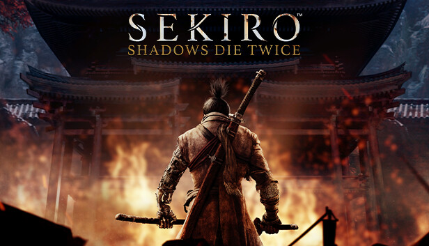

Sekiro shadows die twice
Jogos de aventura e soulslike, 2019

Por que eu gosto?
O jogo não me explica nada. Você entra no vale sem mapa e sem tutorial.
Ficha técnica
| Gênero | Aventura, exploração |
|---|---|
| Lançamento | mar/2019 |
| Plataformas | PC e consoles |